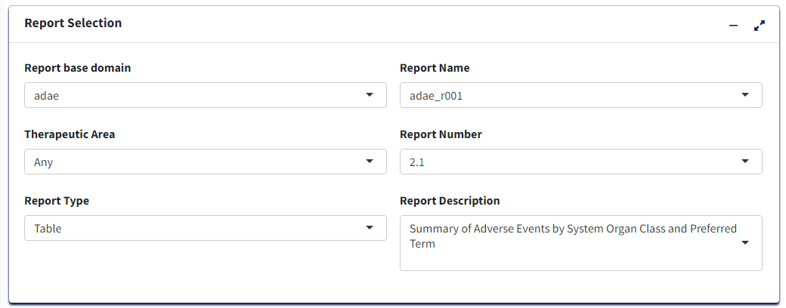
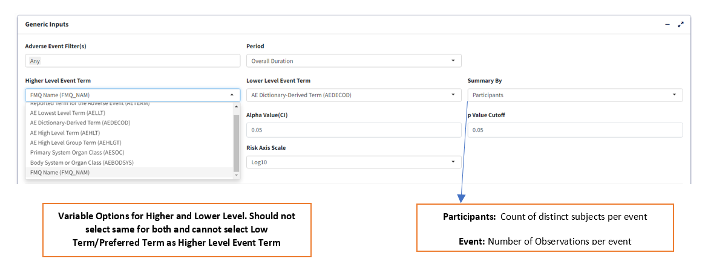
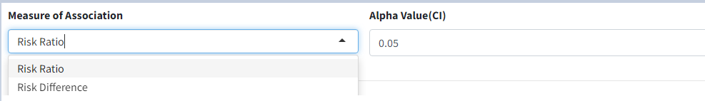
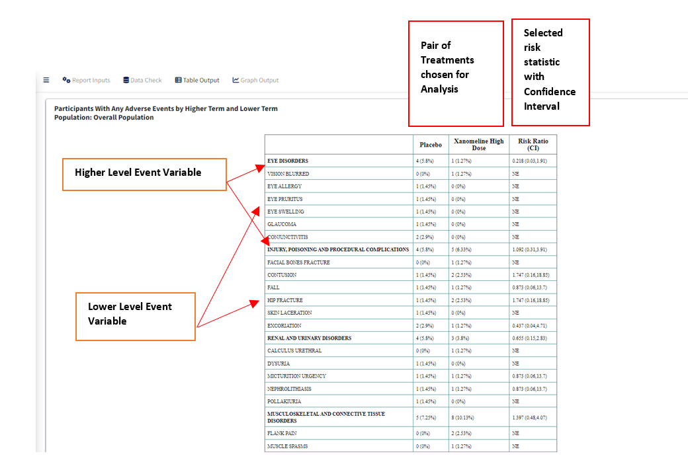

Introduction
This article pertains to creating a Summary table of Adverse Events
i.e adae_r001 report using the carver application. The
required input ADaM data for this is an ADAE dataset.
Report Inputs in App
Upon loading ADAE data and clicking the Report Inputs
tab, select Report Type as Table and Report Name as
adae_r001

Treatment/Population
Required
- Under Treatment and Population Selection, select appropriate
Treatment Variable:
This groups the data treatment-wise and each treatment will reflect in the columns of the table.
- Select appropriate
Treatment Sort Variablewhich will give the order for sorting Treatment variable
- To subset entire data based on available population flags, select
Population Filter. eg. Overall, Safety (SAFFL) etc
 Data Pre-processing/Preparation
Data Pre-processing/Preparation
Optional - Can use defaults
Analysis Subset Conditionis the filter condition for the data to get counts of participants/events for each treatment.Denominator Subset Conditionis the filter condition for the data to calculate percentages of participants/events for each treatment.Percentage Denominator- What denominator to use to calculate % of each terms for the table? ‘Treatment’ - within each treatment group and ‘Total’ - within variable total. IfCalculate Risk= Y, then this is fixed as ‘Treatment’ in order to calculate Risk Statistic.-
Select Y/N for:
Treatment Big N- To append to Treatment column names the total count of each group in the format (N = count) or not.Total Treatment- To create an extra column for total of all treatment groups/make it available for pair-wise selection in case ofCalculate Risk= Y.Add Missing Grouping Variable?- Whether empty/NA values of grouping (Higher Level Event Term) variable are to be included or not.-
Calculate Risk- determines the type of table:- If ‘N’, then all Treatments are displayed with Counts and % of the
Adverse Event terms for each, in the table.
- If ‘Y’, then user selects a single Treatment Pair to display Counts and % for as well as Risk Difference or Risk Ratio for the pair.
- If ‘N’, then all Treatments are displayed with Counts and % of the
Adverse Event terms for each, in the table.

-
Adverse Event Filter(s), select which adverse events are to be filtered for analysis from the list available in the data.
-
Perioddrop-down to filter the required time period alone select ‘Overall Period’ to take entire data or ‘Other’ to specify the residual period (in days) to cut off.

-
Summary Byto select either ‘Participants’ or ‘Events’ which determines how counts are calculated. -
Lower Level Event Term- Variable which gives the list of adverse event terms to be analysed and displayed in the table.
-
Higher Level Event Term- Variable that is used for grouping Lower Level Term, its values in the table will divide the Lower Level Event Term variable into groups, with the Higher Level terms displayed in bold.

For table with Risk - if Calculate Risk =
‘Y’:
-
Measure of Association- which statistic to calculate, ‘Risk Difference’ or ‘Risk Ratio’
-
Alpha Value(CI)- Give the alpha value to determine Confidence Interval. eg. 0.05 –> 95% CI

-
Control Group- Select treatment value within Treatment Variable to use as Control for analysis
-
Treatment Group- Select treatment value to perform pair-wise analysis against Control.

Display Options
-
Cutoff Incidence- Slide to the minimum % incidence a term should have (in any of the selected treatment groups) to be displayed in the table Those with lower values will be removed.
-
Sorting Option- Order in which to sort the Adverse Event terms in plot - Ascending, Descending (usingSorting Variable) or Alphabetical.
-
Sorting Variable- Which parameter/measure should be used to sort the terms in the plot in order ofSorting Option

Table Output:
After selecting options, click ‘Process Report Input’ to view the table in Table Output tab.
Table with Risk Statistic
Sorted in Ascending Order of Count

Table without Risk Statistic
Sorted in Descending Order of Count